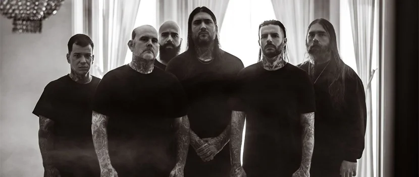
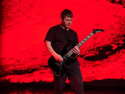
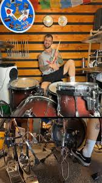

О группе

Группа Red Horizon основана в 2018 году. Играем альтернативный рок с элементами пост-панка. За 6 лет существования выпустили 3 студийных альбома и объехали с турами 15 городов России.
В 2022 году стали лауреатами премии "Чартова дюжина" в номинации "Открытие года". Участники крупнейших рок-фестивалей: "Нашествие", "Рок над Волгой", "Дикая мята".
Участники группы
Алексей Ветров - вокал, текст

Михаил Соколов - гитара

Дмитрий Волков - барабаны
Ссылки
VK | YouTube Music | Telegram